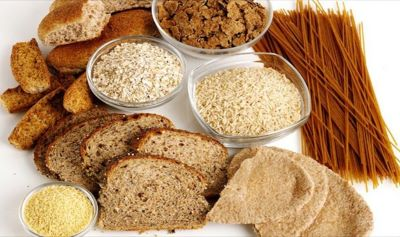

Tu salud
Aqui encontraras las mejores recetas y cuidados sobre tu salud

ENSALADA CON NARANAJA, QUESO Y PISTACHOS

ENSALADA SENCILLA Y SALUDABLE CON AGUACATE

CARPACCIO DE PEPINO CON SARDINAS
ULTIMAS RECETAS
ENSALADA CON NARANAJA, QUESO Y PISTACHOS
INGREDIENTES: 9
PERSONAS: 4
TIEMPO 20 MIN

ENSALADA SENCILLA Y SALUDABLE CON AGUACATE
INGREDIENTES: 11
PERSONAS: 4
TIEMPO 35 MIN
CARPACCIO DE PEPINO CON SARDINAS
INGREDIENTES:10
PERSONAS 4
TIEMPO 35 MIN
OTRAS NOVEDADES
La fibra ayuda al colesterol

¿Quién no ha escuchado alguna vez que tiene que tomar más fibra para ir al baño? ¿Y que debe priorizar la fruta entera al zumo para evitar la diabetes? Todo ello es cierto y son muchos los efectos que se atribuyen a la fibra que ingerimos diariamente pero ¿sabía que es capaz también de disminuir nuestros niveles de colesterol?
Recordemos que el colesterol es necesario para un correcto funcionamiento del organismo. Se requiere para digerir las grasas y la síntesis de algunas vitaminas y hormonas.
No obstante, unos niveles altos de colesterol son perjudiciales para la salud. Así, tener unos niveles elevados durante un tiempo prolongado supone un mayor riesgo de enfermedades cardiovasculares, como por ejemplo los infartos agudos de miocardio.
Tener o no un nivel alto de colesterol depende de muchos factores: la genética, la edad, la actividad física, el tabaquismo, el sobrepeso, la dieta… En este último, la fibra juega un papel esencial.
Ver Mas
Falsos mitos
El deporte y la alimentación saludable son la base para un buen estado de salud, pero a veces no sabemos si lo que hacemos lo hacemos bien y si las pautas que seguimos, sobre todo para perder peso, funcionan. Y esto es así porque existen muchos falsos mitos en torno a la alimentación y el deporte.
Una de las claves para tener una buena salud es la combinación de ejercicio físico y alimentación sana y equilibrada, pero a veces nos surgen dudas sobre si lo que hacemos está bien o mal. Así, muchas personas creen que quemarán grasa si entrenan en ayunas, si prescinden de los hidratos de carbono por la noche o si ingieren determinados suplementos pero ¿qué hay de cierto en todo esto?
Expertos del Consejo General de Dietistas y Nutricionistas responden a algunos de los mitos más habituales en alimentación y deporte:
Ver Mas